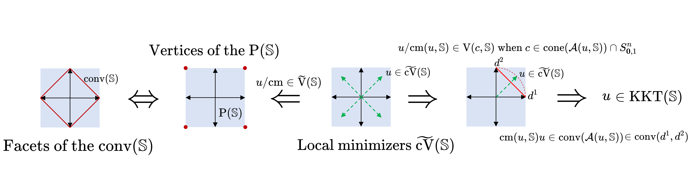
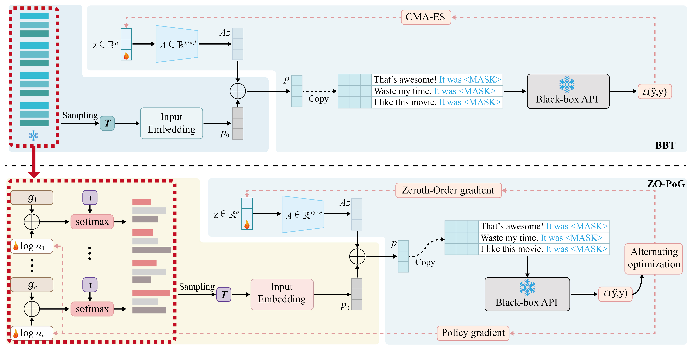

|
Zhekai Liu
I am an incoming Ph.D. student in the Department of SEEM at The Chinese University of Hong Kong, advised by Prof.
Anthony Man-Cho So. My research interest is mathematical optimization.
Previously, I completed my B.S. at Jilin University, China, majoring in Applied Mathematics. I ranked 1st in the
Strengthening Basic Disciplines Plan, Experimental Class.
I was very fortunate to be advised by Prof. Warren Hare during the MITACS Globalink Research Internship (GRI) at the University of British Columbia in the summer of 2025.
Email /
Scholar /
Github
|
|
Research
I'm interested in mathematical optimization, especially the derivative-free optimization.
|
|

|
Critical Structures of the Cosine Measure Problem
Warren Hare, Zhekai Liu, Scholar Sun
In submission
Solved an open question given by Prof. Rommel G. Regis' paper.
|
|

|
Collaborative Discrete-Continuous Black-Box Prompt Learning for Language
Models
Hualin Zhang, Haozhen Zhang, Zhekai Liu, Bin Gu, Yi Chang
International Conference on Learning Representations (ICLR), 2025
paper
/
code
One application of the derivative-free optimization in LLMs.
|
|
Talks and Posters
|
The Local Structure of Cosine Measure Minima in Positive Spanning Sets
A talk for SUSTech math Students, Jilin University, Changchun, China, 2025
Applied and Numerical Aspects for Nonlocal Initial Value Problems
Talk and poster presentation,
Joint Mathematics Meetings (JMM), Seattle, USA, 2025
Binomial Tree Option Pricing Model
IUSEP in Mathematics, University of Alberta, Canada, 2024 [Slides]
|
|
Selected Honors and Awards
|
CUHK Postgraduate Studentship 2026-2030
Outstanding Student of the University 2026
Shianghao Wang Scholarship 2026
MITACS Globalink Research Internship Award 2025
First-class Scholarship 2024 2026
|
|
Teaching
|
Mathematical Analysis (Teaching Asistant), Fall 2024 and Spring 2025. [handouts and notes]
|
|
{kind=link}